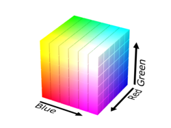
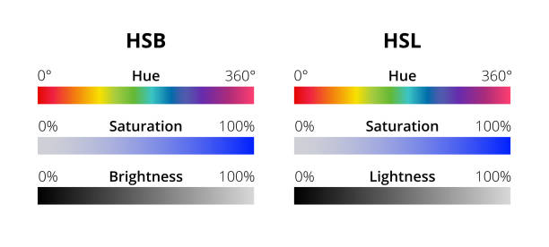

How Colors Are Made
In CSS, colors are specified using two main models:
RGB (Red, Green, Blue), an additive model for digital screens,
HSL (Hue, Saturation, Lightness), a model that's more intuitive for human perception.
RGB Colors
The RGB (Red, Green, Blue) model is an additive color model. This means it creates a broad spectrum of colors by mixing different intensities of red, green, and blue light. Each color component is defined by an integer value between 0 (no intensity) and 255 (full intensity). When all three components are at their maximum (255), the result is white. When all are at their minimum (0), the result is black.

HSL Colors
The HSL (Hue, Saturation, Lightness) model represents color based on hue (the color type), saturation (intensity), and lightness (brightness).

Color Type Definitions
Named Color
Definition: The simplest method, using one of the 140+ predefined, case-insensitive color names.
Details and Syntax:You just write the name of the color.
color: steelblue;
Example:
<div style="background-color: dodgerblue;">
<p style="color: lightblue;margin:0; padding: 16px;">This is a paragraph.</p>
</div>
HEX Color
Definition: A hexadecimal representation of an RGB color.
Details and Syntax: A # followed by six hex digits (0-9, a-f). The first pair represents red, the second green, and the third blue (#RRGGBB).
A three-digit shorthand (#RGB) works if both digits in each pair are the same
/* 6-digit syntax */
color: #4C566A;
/* 3-digit shorthand */
color: #FFF; /* same as #FFFFFF */
Example:
<div style="background-color: #EEEEEE;">
<p style="color: #CC3333;margin:0; padding: 16px;">This is a paragraph.</p>
</div>
RGB Color
Definition: Defines a color with the rgb() function using the Red-Green-Blue model
Details and Syntax: rgb(red, green, blue). Each parameter is an integer between 0 and 255.
/* Integer values */
color: rgb(76, 86, 106);
/* Percentage values */
color: rgb(30%, 34%, 42%);
Example:
<div style="background-color: rgb(214, 154, 154);">
<p style="color: rgb(0, 102, 153);margin:0; padding: 16px;">This is a paragraph.</p>
</div>
RGBA Color
Definition: An extension of RGB that includes an alpha channel for setting opacity.
Details and Syntax: rgba(red, green, blue, alpha). The alpha value is a number between 0.0 (fully transparent) and 1.0 (fully opaque).
/* 50% transparent color */
color: rgba(76, 86, 106, 0.5);
Example:
<div style="background-color: rgba(67, 76, 94, 0.5);">
<p style="color: #ECEFF4;">This is a paragraph.</p>
</div>
HSL Color
Definition: Defines a color with the hsl() function using the Hue-Saturation-Lightness model.
Details and Syntax: hsl(hue, saturation, lightness). Hue is an angle 0-360, while saturation and lightness are percentages 0%-100%.
- Hue: The type of color, represented as an angle on the color wheel (0 to 360 degrees). 0 is red, 120 is green, and 240 is blue.
- Saturation: The intensity or purity of the color, represented as a percentage (0% is a shade of gray, 100% is the full color).
- Lightness: The brightness of the color, also a percentage (0% is black, 50% is the normal color, and 100% is white).
/* A bright, saturated blue */
color: hsl(221, 23%, 65%);
Example:
<div style="background-color: hsl(220, 13%, 95%);">
<p style="color: hsl(348, 32%, 58%);">This is a paragraph.</p>
</div>
HSLA Color
Definition: An extension of HSL that adds an alpha channel for opacity.
Details and Syntax: hsla(hue, saturation, lightness, alpha). The alpha value is a number between 0.0 (fully transparent) and 0.0 (fully opaque).
/* A 50% transparent, saturated blue */
color: hsla(221, 23%, 65%, 0.5);
Example:
<div style="background-color: hsla(214, 32%, 21%, 0.7);">
<p style="color: #D8DEE9;">This is a paragraph.</p>
</div>